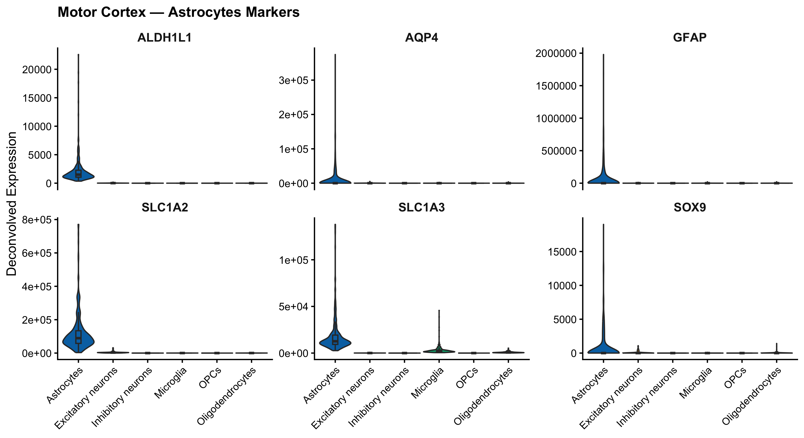
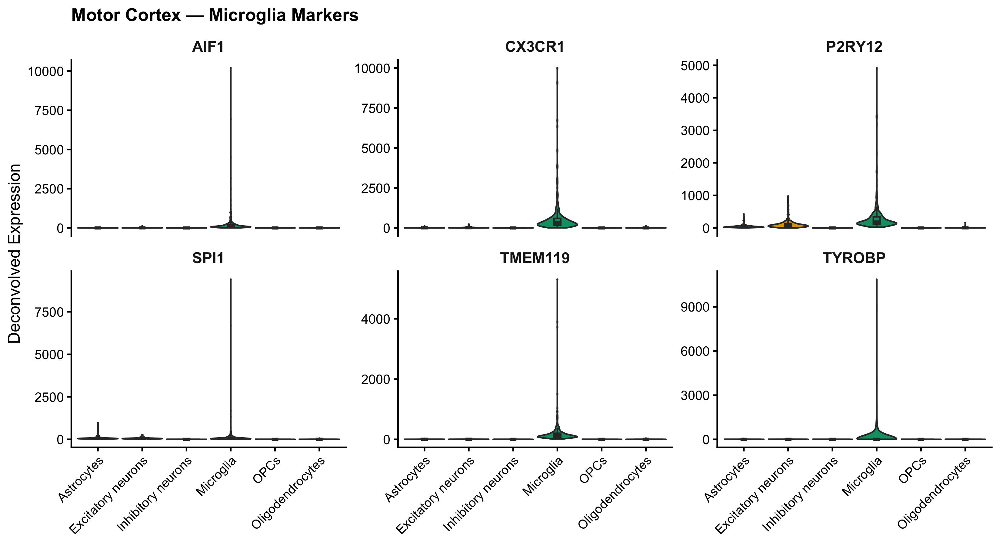
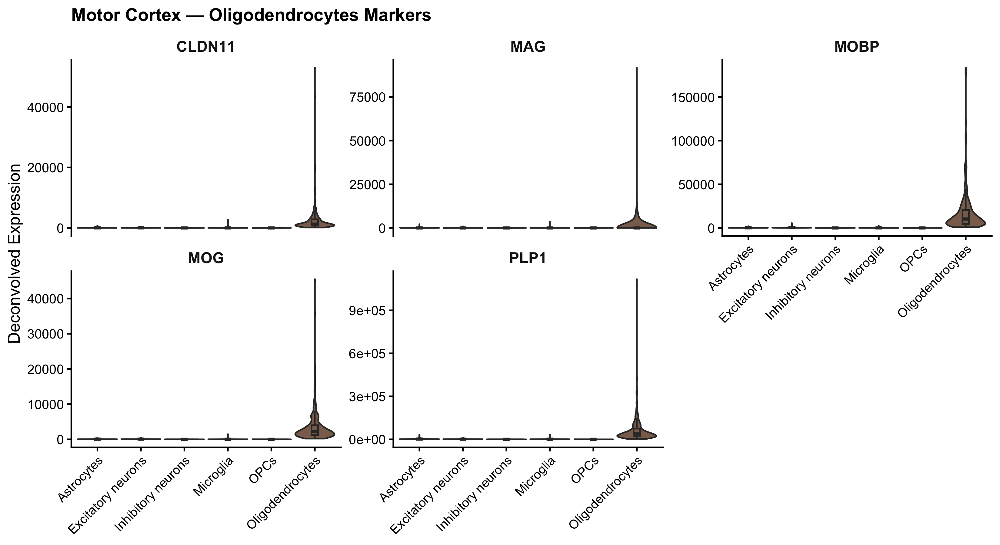
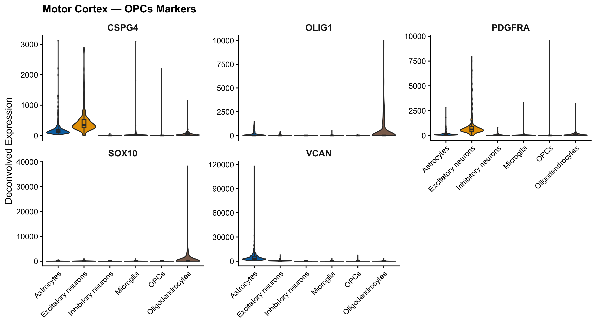
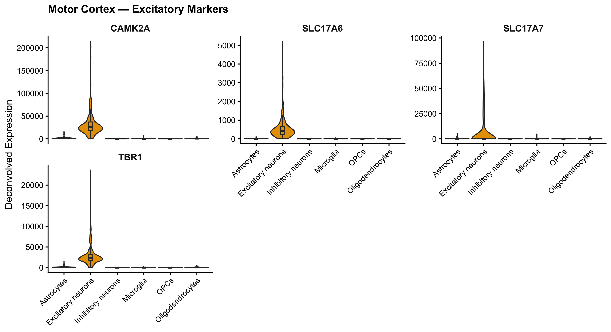
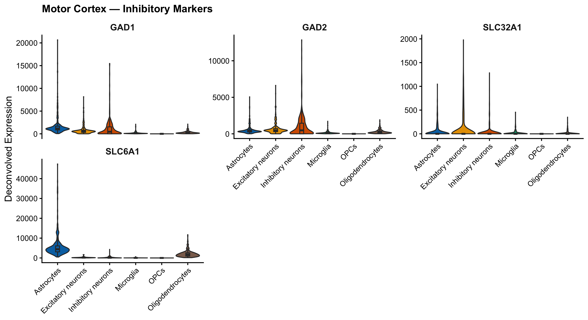
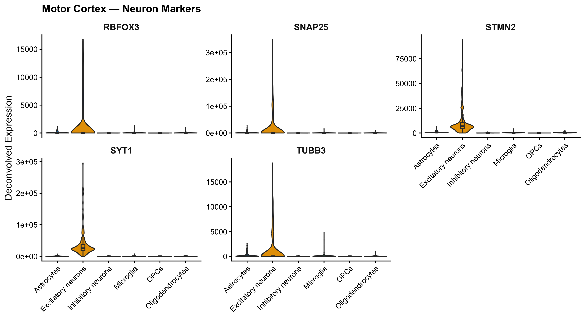
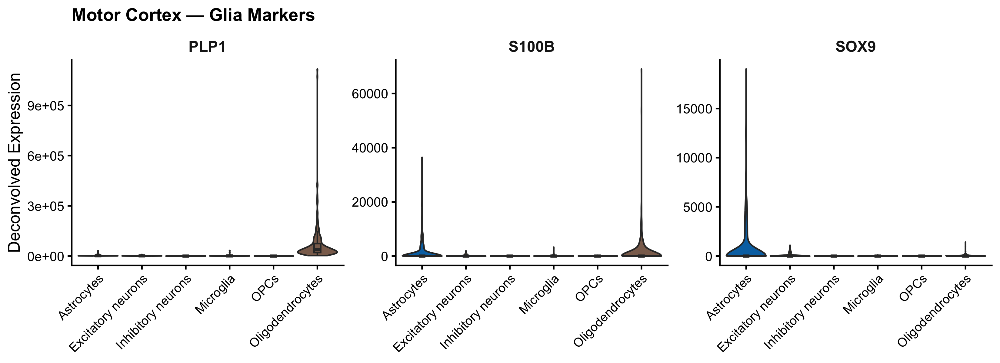
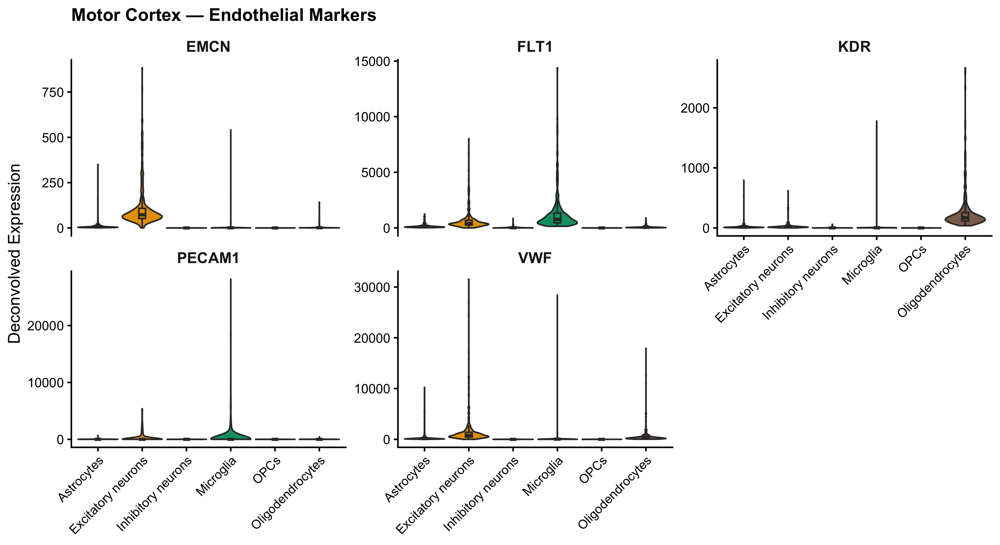
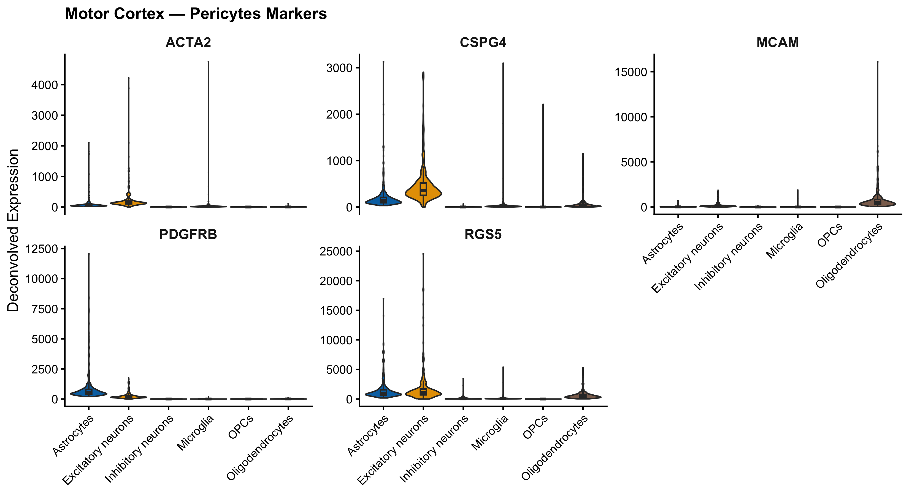

Violin plots showing known cell-type marker gene expression within each deconvolved cell fraction, validating that the deconvolution correctly separated major CNS cell populations. Samples with RIN < 6 excluded. 302 samples · 6 cell types.
The motor cortex presents a distinct cytoarchitecture compared to other cortical regions — most notably the presence of large Betz cells (upper motor neurons) in layer V. Validating deconvolution here is particularly important for ALS research, as upper motor neuron degeneration is a defining feature of the disease. Each deconvolved expression profile is assessed against curated marker gene sets. Selective enrichment of known markers within their expected cell-type fractions confirms successful deconvolution. Markers shared between fractions are expected to show biologically consistent cross-signal.
GFAP and AQP4 are among the most astrocyte-specific markers in the CNS. In the motor cortex, reactive astrogliosis is prominent in ALS — increased GFAP expression is a hallmark of disease progression. SLC1A2 (EAAT2) is the dominant glutamate transporter in the cortex; impaired EAAT2 function leads to excitotoxic motor neuron death, directly relevant to ALS pathophysiology. SLC1A3 (EAAT1) plays a complementary role in perisynaptic glutamate clearance. ALDH1L1 marks all astrocyte subtypes regardless of activation state. Enrichment of these markers in the Astrocytes fraction confirms the deconvolution captured this critical supportive cell population.

AIF1 (IBA1) robustly labels all microglia and is the gold standard for microglial quantification in tissue sections. In ALS motor cortex, microglial activation around degenerating corticospinal tracts is well-documented. P2RY12 and TMEM119 are sensitive indicators of homeostatic microglial state — their downregulation in ALS samples may reflect disease-associated activation. CX3CR1 mediates the neuron-derived chemokine fractalkine signal that regulates microglial surveillance and synaptic pruning. TYROBP and SPI1 reflect the myeloid identity of microglia; SPI1/PU.1 is a master regulator of microglial gene expression programs.

MBP and PLP1 are the most abundant proteins in CNS myelin and serve as anchor markers for mature oligodendrocytes. The corticospinal tract, which originates from motor cortex layer V, is heavily myelinated — making oligodendrocyte integrity critical for upper motor neuron function. Demyelination along the corticospinal tract is observed in ALS. MOG is found at the outermost myelin sheath and is a target in autoimmune demyelinating disease. MAG is concentrated at periaxonal membranes critical for axon–glia interaction. MOBP and CLDN11 mark compacted, mature myelin and are specific to oligodendrocytes.

PDGFRA marks OPCs throughout the brain and is the primary receptor for PDGF-AA mitogen signaling driving OPC proliferation. CSPG4 (NG2) identifies OPCs in white and gray matter but also labels pericytes — cross-signal with vascular fractions is possible. VCAN is a large extracellular matrix proteoglycan that OPCs secrete into their local niche. SOX10 is required across the oligodendrocyte lineage and regulates myelination gene expression. OLIG1 is essential for OPC differentiation into myelinating oligodendrocytes, particularly during remyelination after injury. The presence of OPC markers in motor cortex is especially relevant as failed remyelination contributes to corticospinal tract degeneration.

SLC17A7 (VGluT1) marks cortical pyramidal neurons including layer V neurons that give rise to the corticospinal tract. In motor cortex, these neurons include the large Betz cells whose degeneration is characteristic of ALS. SLC17A6 (VGluT2) is additionally expressed in subcortical glutamatergic populations projecting into motor cortex. CAMK2A (CaMKII-α) is highly expressed in excitatory neurons and is critical for synaptic plasticity and motor learning. TBR1 specifies the identity of early-born, deep-layer cortical excitatory neurons. Given the ALS-relevant upper motor neuron population in this region, the quality of excitatory neuron deconvolution is especially significant.

GAD1 and GAD2 encode GAD67 and GAD65 — the two enzymes that synthesize GABA from glutamate — and together define the GABAergic identity of all cortical interneurons. The balance between excitatory and inhibitory neurotransmission in motor cortex is critical; hyperexcitability due to disrupted inhibitory circuits is a proposed mechanism of upper motor neuron vulnerability in ALS. SLC6A1 (GAT-1) performs GABA reuptake at both neuronal and glial terminals. SLC32A1 (VGAT) packages GABA into vesicles and is expressed exclusively in inhibitory neurons. Clean separation of inhibitory from excitatory fractions validates the interneuron compartment.

Pan-neuronal markers should be enriched across both excitatory and inhibitory fractions, validating the overall neuronal compartment. RBFOX3 (NeuN) marks post-mitotic neurons in all brain regions. SNAP25 and SYT1 are pre-synaptic vesicle machinery components expressed in all neuron subtypes. TUBB3 (β-III tubulin) is the canonical neuronal cytoskeletal marker distinguishing neurons from glia. STMN2 (SCG10) is critically important in motor cortex context: STMN2 expression is controlled by TDP-43, whose nuclear clearance and cytoplasmic aggregation is the most common pathological hallmark in ALS. Reduced STMN2 reflects TDP-43 dysfunction and impaired axonal repair capacity in motor neurons.

SOX9 coordinates astrocyte and OPC specification and is expressed in both fractions — signal in both is expected. S100B is a calcium sensor expressed in astrocytes and some oligodendrocytes, and is released into CSF following brain injury, serving as a biomarker of astrocyte damage. In motor cortex, S100B elevation may reflect the reactive gliosis that accompanies motor neuron degeneration. PLP1 is included here as an oligodendrocyte reference — its selective enrichment in the Oligodendrocytes fraction versus broad glial distribution confirms the deconvolution successfully distinguished astrocytes from oligodendrocytes. Absent neuronal signal in these glial markers indicates good cell compartment separation.

PECAM1 (CD31), VWF, KDR (VEGFR2), FLT1 (VEGFR1), and EMCN define vascular endothelium. Endothelial cells line the dense capillary network supplying the metabolically demanding motor cortex, but are not a separate fraction in this deconvolution. Any residual signal across deconvolved fractions reflects the inherent limitation of bulk-tissue deconvolution when the reference lacks specific cell types. Blood-brain barrier disruption, increasingly recognized in ALS, may modulate endothelial gene expression in ways that introduce non-specific signal in these bulk tissue samples.

PDGFRB is the primary pericyte identity marker. RGS5 is a GTPase-accelerating protein highly enriched in brain pericytes and used to distinguish them from smooth muscle cells. MCAM (CD146) marks pericytes in the neurovascular unit. ACTA2 (α-SMA) is expressed in contractile pericytes that regulate cerebral blood flow. CSPG4 (NG2) is expressed in both pericytes and OPCs — any NG2 signal in the OPCs fraction should be interpreted with this dual origin in mind. Like endothelial cells, pericytes are not deconvolved as a distinct fraction here, so non-specific distribution across fractions is expected and does not indicate deconvolution failure.
